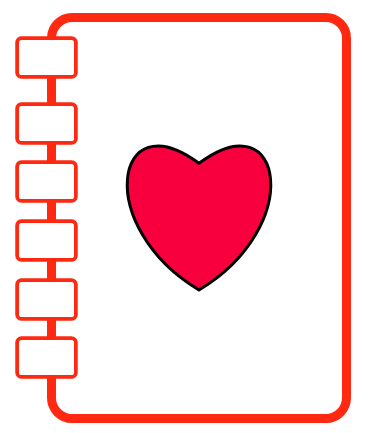

Diário de Samuel
Ese é meu diário do Samuel, eu vou quardar tudo que fis e nao vou contar pra ninquem as coisas que fis e niquem pode ficar sabendo. nao conta pra ninquem e pare de ler se nao for eu Samuel
Domingo, 29/04/2001
Hogi foi aniversario do thiago, eu coloquei um bezouro no pedaço de bolo dele e ele comel tudinho e ainda achou gostoso. Eu cloquei outro bezouro em outro pedaço de bolo mas dessa vez outra pessoa comel e notou qui tinha um bixo no meio e ligaram para a moça que fez o bolo. deu muita briga e vao proceçar a mulher mas nem sei oque e proceçar, bem feito pra ela que poe bixos no bolo
Segunda-feira, 30/04/2001
O ladrao do matheus roubou uma figurina minha do meu caderno e ainda riu de mim mas ele vai ver so, entao peguei o carderno dele quando todos sairam da sala e rasguei todas as folias e joguei no vaso e dei descarga. o vaso entupiu e viram o nome do matheus em uma das folhas e agora ele levou suspençao de 1 mes e ainda apanhol dos pais. muito bem feito pra deichar di ser ladrao